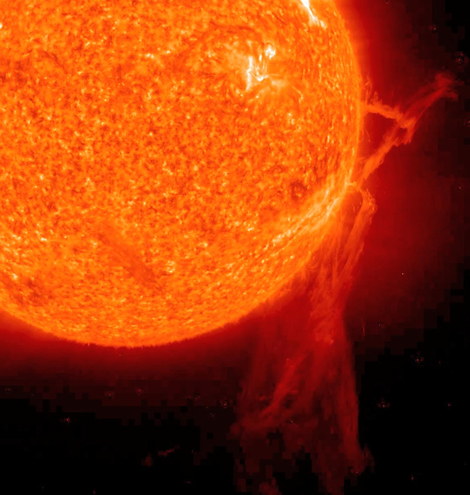

IMAGE: The Sun | IMAGE CREDIT: NASA/GSFC
Dusty's Log Entry:
- Type: G-class Main Sequence Star
- Temperature: about 5,300-6,000 K
- Mass: about 0.8-1.04 Suns
- Lifespan: 10 billion years
- What's Next: red giant, then planetary nebulae, then white dwarf
Yellow dwarfs are uncommon, only making up 7.5% of the Milky Way's stellar population. The name of these stars can be deceiving, as yellow dwarfs can be yellow or white. Additionally, these stars are larger than a majority of the stars in the Milky Way. They're referred to as dwarf simply due to their comparison to the colossal size of giant stars, as yellow dwarfs are larger and brighter than about 90% of the stars in the Milky Way. The best example of a yellow dwarf is the Sun. The Sun is a white star, only visually yellow due to the Earth's atmosphere and contains 99.8% of the mass in our solar system. The Sun is the largest object in the Milky Way, but still only considered a dwarf compared to the many stars in the universe.
Examples of the yellow dwarf includes Alpha Centauri A and Tau Ceti.